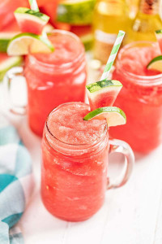

Water Melon Slushy
Back to Odin Recipes

The Perfect Drink for the Summer
Most of the year we’re totally fine just sipping on water. It’s hydrating, quick, and nothing fancy. Basically, water gets the job done. Once the warm weather hits, we are all about the super refreshing beverages.
Ingredients
- 8 cups frozen watermelon cubes
- 2 cups ginger ale soda
- 2 whole limes
- 1/4 cup Sugar
Preparation Steps
- In a blender, add in frozen watermelon cubes, lime juice, ginger ale and sugar.
- Blend on high until smooth
- Pour in glass and serve with a wedge of lime!